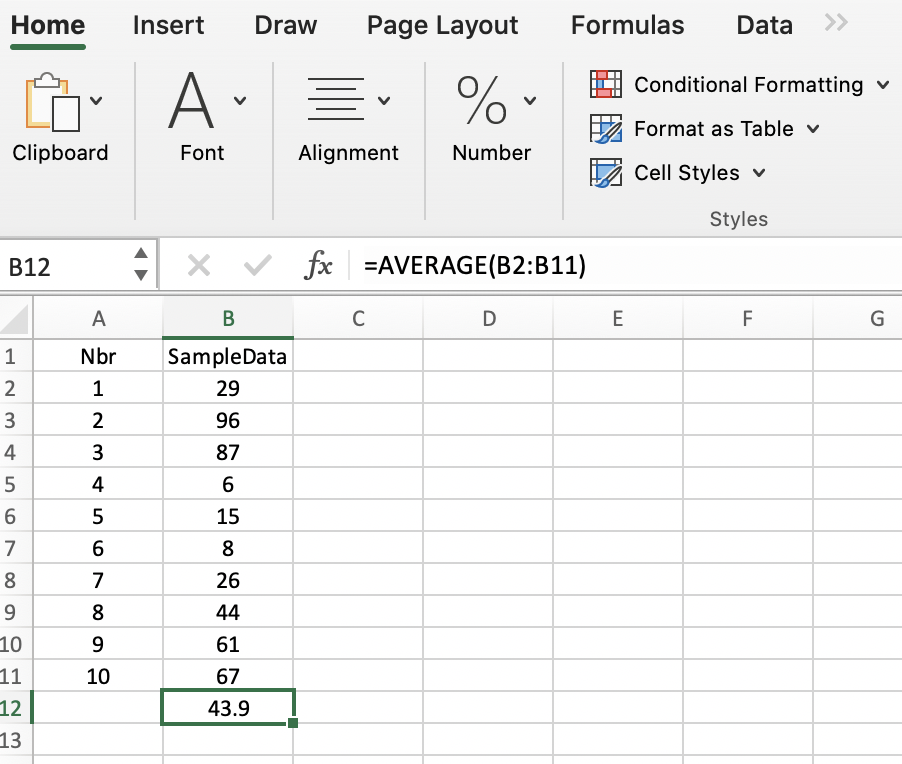
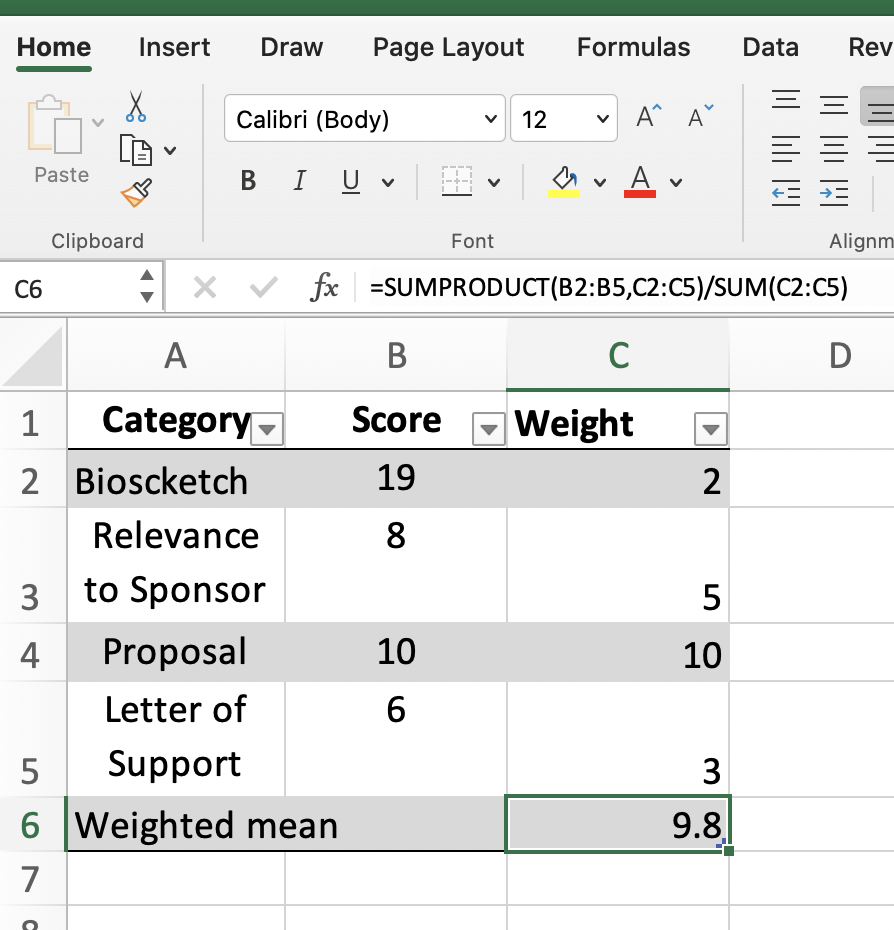
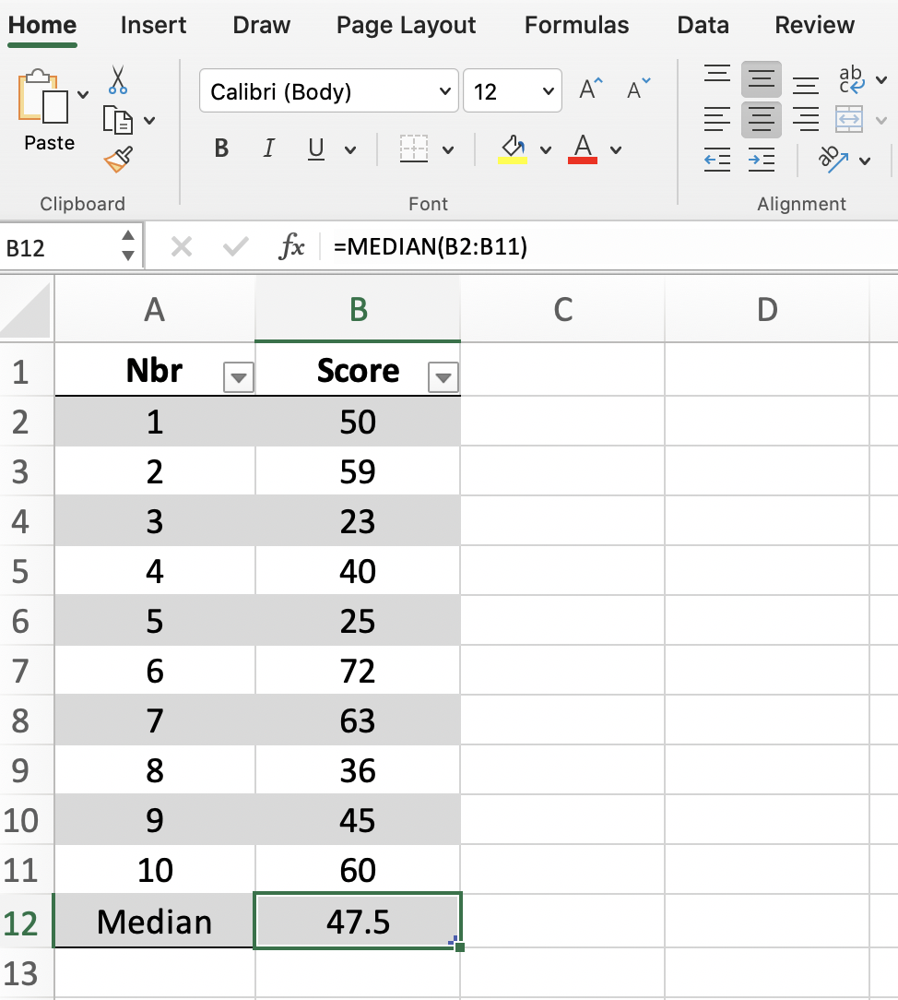
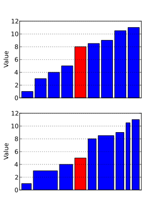
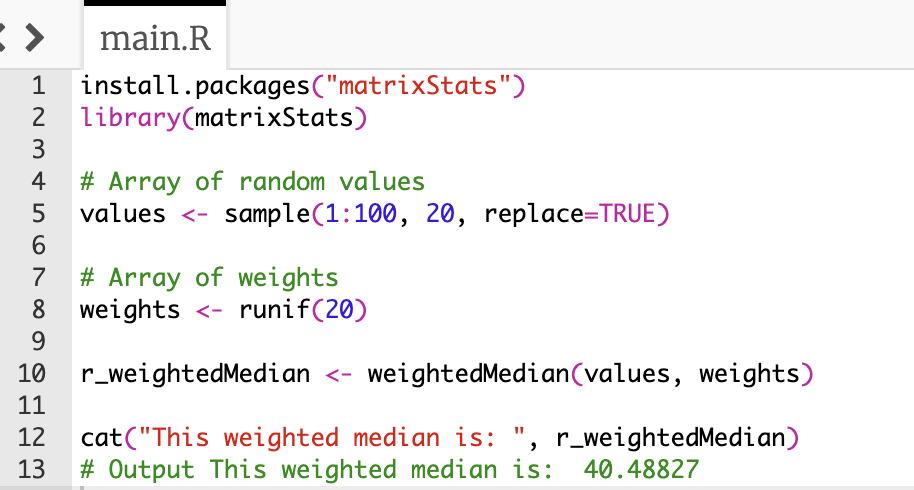
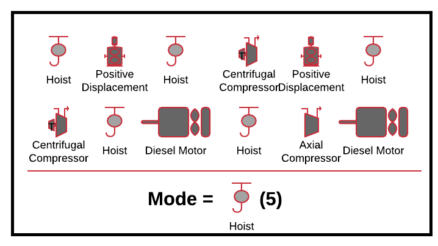
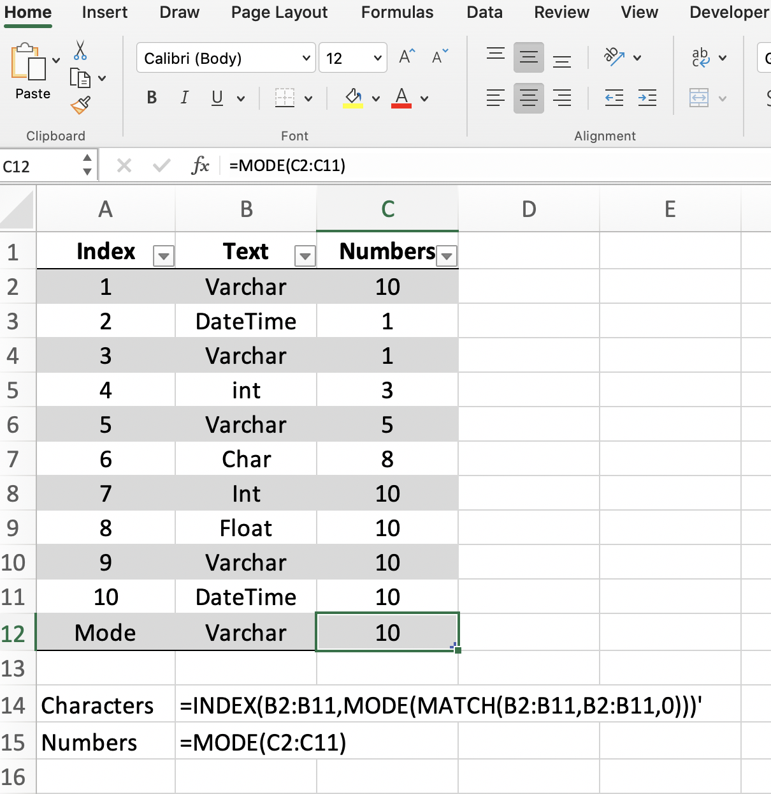

Background Info

Central tendency: describes where most of the data is located in its range of values. Also known as: Average, center, location. The center tendency of a one dimensional dataset can be examined using various measures (formulas), and which one is used depends on the data being analyzed.
Why is this important?
Central tendencies are a category of mathematics that has a long history. Iterations of "averages" have been used to help explain observations, distribution of resources, and even commerce. More recently, Carl Friedrich was one of the first scientist to suggest that the
most probable value in a dataset can be represented by the arithmetic mean. Although some of those historical records are poorly document, the principles of central tendency have been, and will continue to play an important role in our lives. Understanding the central tendency of a dataset is one of the first steps in exploratory
data analysis, and it is often one of the first reported features of a data set. Most
people are familiar with the average, but there are many other measures of central
tendency, and this post will explore them in detail.
Arithmetic Mean (Mean), "Average"
Definition: The sum of all values divided by the number of values.When to use:
You will want to calculate the mean when you want to know what is the most common value in your dataset. Example:
You the distance that baseballs travelled when they were hit in a game, and you want to know, what was the most common distance that the ball travelled.
What to consider:
This value of central tendency is VERY sensitive to outliers. Outliers are values in your dataset that are very different from most of the data.
Calculate the Mean using R programming
Calculate the Mean using Python
Download Jupyter Notebook FileCalculate the Mean using Excel
Average(Number1, Number2, ...)

Weighted Mean, "Weighted Average"
The sum of All values that were multiplied by some "weight". The total sum is then divided by the sum of the weights. When to use:A weighted mean is used when you want to take into account the varying degree of importance of the numbers in a dataset. To calculated a weighted mean, you will need:
An array of values ("x") in formula above
An array of weights ("w") in formula above
The index of the values and weights should be the same.
Calculate the Weighted Mean using R programming
Calculate the Weighted Mean using Python
Download Jupyter Notebook FileCalculate the Weighted Mean using Excel
=SUMPRODUCT(Values Array, Weights Array)/SUM(Weights Array)

Median
Definition: The position in the dataset where half of the values are below, and above. When to use:You can use this measure if you know you have extreme values that would skew your measure of central tendency.
Calculate the Median using R Programming
Calculate the Median using Python
Download Jupyter Notebook FileCalculate the Median using Excel
=MEDIAN (number1, [number2], ...)
 Excel
Weighted Median
Definition: The position in the dataset where half of the weighted values are below, and above. The general case is presented, for more information on the special cases, please see Weighted Median Wiki. The red bars in both charts are the median elements. The standard median is displayed in the top chart, and the weighted values in the bottom plot.When to use:
Simplified:
You will want to use this measure in cases where the data points in your dataset are not equally important, or don't have the same significance in the overall analysis. For example, a rubric to score student grant application. The reviewers will score the application by the student CV, their research proposal, their academic standing, the mentor letter of support, and their personal statement. Some of these scores are more important that others, and the weighted median will take this into account, and give you the value associated with the weight whose running sum crosses 50% of the total weight. The barplot will hopefully illustrate this point. Technical
You will use this measure of central tendency when you want to find a value such that the total weights of the samples above and below the median are both less than or equal to half the total weight of all samples.
Calculate the Weighted Median using R Programming
To date, base R doesn't have a function for calculating the weighted median, although thematrixStats package does. More information can be found here:
matrixStats website.

Calculate the Weighted Median using Python
Download Jupyter Notebook File
Trimmed Mean, "Truncated Mean"
Definition: A mean that is obtained after dropping a fixed number of extreme values. When to use:When you have determined that you may exclude extreme values (outliers) from your dataset. When to omit data is beyond the scope of this post.
Calculate the Trimmed Mean using R Programming
Calculate the Trimmed Mean using Python
Download Jupyter Notebook FileCalculate the Trimmed Mean using Excel
=TRIMMEAN(array, percent)
Mode
Definition: The most commonly occurring value, or category in a dataset.  When to use:Calculate the Mode using R Programming
Calculate the Mode using Python
Download Jupyter Notebook FileCalculate the Mode using Excel
Formula to determine the mode for numbers:=MODE(C2:C11)Formula to determine the mode for characters/strings:
=INDEX(B2:B11,MODE(MATCH(B2:B11,B2:B11,0)))
